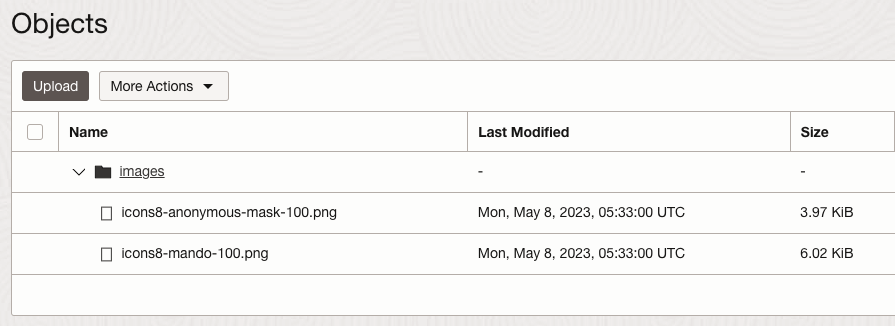

1.9.2 Workload Identity 사용하기
-
Workload Identity: 애플리케이션 컨테이너 Pod에서 OCI 자원에 대해 API Call을 하는 경우, OCI Policy로 권한 설정이 필요합니다. 기본적으로는 애플리케이션내에서 User 인증을 사용하는 방법 또는 Worker Nodes 그룹에 대해 권한 설정하는 방법이 있습니다. 여기에서 추가해 Workload Identity는 Pod 단위로 권한 설정을 지원합니다.
-
쿠버네티스 클러스터에서 구동하는 애플리케이션에서 OCI 자원을 접근할 필요가 있는 경우, 이 때 클러스터 전체가 아닌, 해당 애플리케이션 workload에 한정하여, 권한을 부여하는 것이 보안상으로 안전합니다. OKE 클러스터, namespace, service account의 조합으로 workload 자원을 특정하여 workload identity로 지정하고, 이 workload identity에 대해서 OCI IAM Policy를 통해 다른 OCI 자원에 대한 권한을 부여할 수 있습니다.
-
2023년 5월 현재 기준, Workload Identity는 OCI SDK와 함께 사용할 수 있습니다. 지원하는 OCI SDK는 다음과 같습니다.
- Go SDK v65.32.0 (and later)
- Java SDK v2.54.0 (and later)
Workload Identity에 대한 Policy 설정하기
-
애플리케이션 컨테이너가 위치할 namespace이 없는 경우 먼저 생성합니다.
kubectl create namespace <namespace-name> -
쿠버네티스 Service Account를 생성합니다.
kubectl create serviceaccount <service-account-name> --namespace <namespace-name>-
실행 예시
$ kubectl create namespace workload-identity-ns namespace/workload-identity-ns created $ kubectl create serviceaccount workload-identity-sa --namespace workload-identity-ns serviceaccount/workload-identity-sa created
-
-
OCI 콘솔 - OKE 클러스터 상세정보에서 클러스터 OCID를 얻습니다.
-
대상 Workload Identity에 대한 Policy를 설정합니다.
-
OCI 콘솔에서 내비게이션 메뉴를 엽니다. Identity & Security > Identity > Policies 항목으로 이동합니다.
-
Create Policy 클릭하여 Policy를 생성합니다.
-
Workload Identity 정보를 이용해 다음과 같이 Policy를 지정합니다.
allow any-user to <verb> <resource> in <location> where all { request.principal.type = 'workload', request.principal.namespace = '<namespace-name>', request.principal.service_account = '<service-account-name>', request.principal.cluster_id = '<cluster-ocid>'}-
실행 예시 - 애플리케이션 컨테이너에서 OCI Object Storage에 있는 오브젝트 조회권한 예시
# oke-workload-identity-policy allow any-user to inspect objects in compartment oci-hol-xx where all { request.principal.type = 'workload', request.principal.namespace = 'workload-identity-ns', request.principal.service_account = 'workload-identity-sa', request.principal.cluster_id = 'ocid1.cluster.oc1.ap-chuncheon-1.aaaaaaaa_____yg3a'}
-
-
애플리케이션 컨테이너에서 OCI Java SDK를 사용하는 예시
Java 애플리케이션을 작성합니다. 예시는 Spring Boot를 사용하여, 컨테이너 이미지를 작성후 OKE에 배포하였습니다.
-
pom.xml 에 필요한 라이브러리를 Dependency를 추가합니다.
<dependency> <groupId>com.oracle.oci.sdk</groupId> <artifactId>oci-java-sdk-addons-oke-workload-identity</artifactId> <version>2.54.0</version> </dependency> <dependency> <groupId>com.oracle.oci.sdk</groupId> <artifactId>oci-java-sdk-common</artifactId> <version>2.54.0</version> </dependency> <dependency> <groupId>com.oracle.oci.sdk</groupId> <artifactId>oci-java-sdk-objectstorage</artifactId> <version>2.54.0</version> </dependency> -
Java 코드에서 OCI 인증 부분을 변경 OkeWorkloadIdentityAuthenticationDetailsProvider를 사용합니다.
/* Config the OCI Kubernetes Engine workload identity provider */ OkeWorkloadIdentityAuthenticationDetailsProvider provider = new OkeWorkloadIdentityAuthenticationDetailsProvider .OkeWorkloadIdentityAuthenticationDetailsProviderBuilder() .build(); -
가져온 provider를 통해 OCI 자원에 대한 필요한 작업을 수행합니다.
/* Configure the client to use workload identity provider*/ ObjectStorage client = ObjectStorageClient.builder().region(Region.AP_CHUNCHEON_1).build(provider); GetNamespaceResponse namespaceResponse = client.getNamespace(GetNamespaceRequest.builder().build()); String namespaceName = namespaceResponse.getValue(); -
Dockerfile을 작성하여 컨테이너 이미지를 작성하여 Registry에 등록합니다.
-
OKE 클러스터에 배포하기 위한 manifest yaml 파일을 다음과 같이 작성합니다.
- pod 정의 spec에 serviceAccountName에 앞서 만든 service account 입력
- pod 정의 spec에 automountServiceAccountToken: true 입력
--- apiVersion: apps/v1 kind: Deployment metadata: name: workload-identity-deployment namespace: workload-identity-ns spec: replicas: 1 selector: matchLabels: app: workload-identity template: metadata: labels: app: workload-identity spec: serviceAccountName: workload-identity-sa automountServiceAccountToken: true containers: - name: workload-identity image: thekoguryo/oke-workload-identity:0.0.1 imagePullPolicy: Always ports: - containerPort: 8080 env: - name: OCI_AUTH value: "OkeWorkloadIdentity" - name: OCI_REGION value: "ap-chuncheon-1" -
작성한 manifest yaml 파일을 OKE 클러스터에 배포합니다.
kubectl apply -f oke-deployment.yaml -
배포된 자원내역을 확인합니다.
$ kubectl get sa,deploy,pod,svc -n workload-identity-ns NAME SECRETS AGE serviceaccount/default 0 22h serviceaccount/workload-identity-sa 0 22h NAME READY UP-TO-DATE AVAILABLE AGE deployment.apps/workload-identity-deployment 1/1 1 1 22h NAME READY STATUS RESTARTS AGE pod/workload-identity-deployment-bf798d654-gsp77 1/1 Running 0 80m NAME TYPE CLUSTER-IP EXTERNAL-IP PORT(S) AGE service/workload-identity-service LoadBalancer 10.96.74.56 146.56.xxx.xx 80:31742/TCP 22h -
배포된 애플리케이션을 테스트합니다.
- Visibility: Public은 Workload Identity와 상관없이 조회되므로, Visibility: Private인 Bucket을 대상으로 조회하여 Workload Identity가 잘 동작하여, 결과가 조회되는지 확인합니다.
$ curl http://146.56.xxx.xx/objects?bucket_name=ExampleBucket { "data": [ { "name": "images/icons8-anonymous-mask-100.png" }, { "name": "images/icons8-mando-100.png" } ] }
예제 애플리케이션 코드
- 소스 파일
- https://github.com/TheKoguryo/oke/tree/main/oke-workload-identity
- Spring Boot 2.7.11
- Maven Build 사용
- JDK 11 사용
- OKE 클러스터 배포용 manifest yaml
- https://github.com/TheKoguryo/oke/blob/main/oke-workload-identity/oke-deployment.yaml
- env.name=OCI_REGION
- 대상 OCI Bucktet이 있는 OCI Region으로 각자 환경에 맞게 변경 필요
참고 문서
- OCI Documentation > Container Engine > Granting Workloads Access to OCI Resources
- OCI Blog > OKE Workload Identity: Greater control of access
이 글은 개인으로서, 개인의 시간을 할애하여 작성된 글입니다. 글의 내용에 오류가 있을 수 있으며, 글 속의 의견은 개인적인 의견입니다.